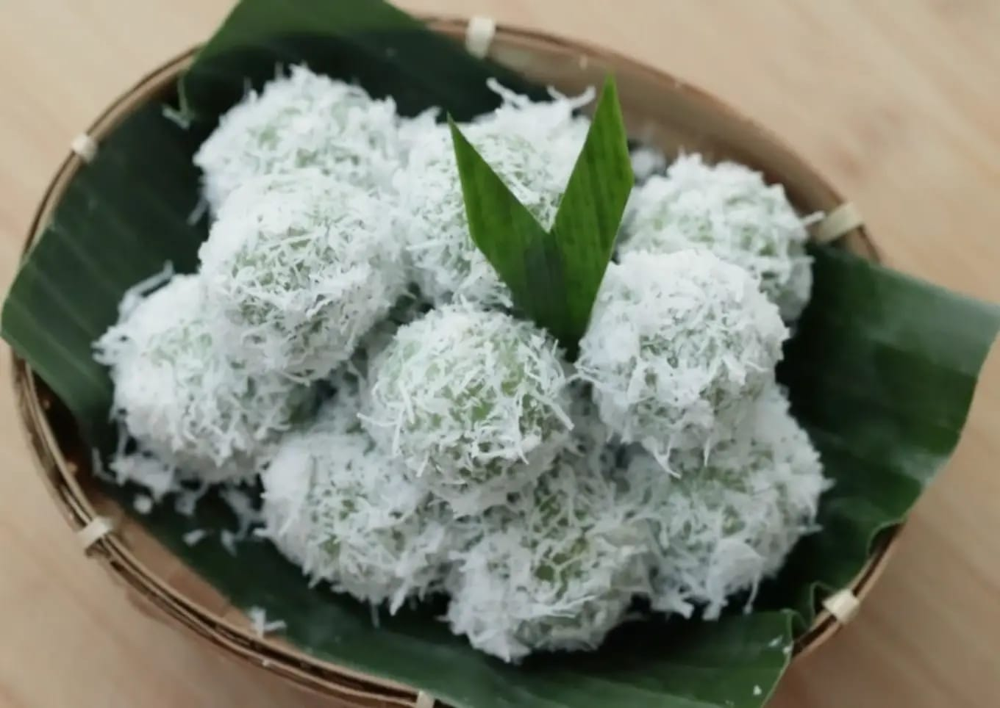

Dapur Kita

Nasi Goreng
Bahan:
- 2 piring nasi putih
- 2 siung bawang putih, cincang halus
- 1 butir telur ayam
- 2 sdm kecap manis
- 1 sdm saus tiram (opsional)
- 1/2 sdt garam
- 1/4 sdt merica bubuk
- 1 batang daun bawang, iris tipis
- Minyak goreng secukupnya
Cara Membuat:
- Panaskan minyak, tumis bawang putih hingga harum.
- Pecahkan telur, orak-arik hingga matang.
- Masukkan nasi, aduk rata.
- Tambahkan kecap manis, saus tiram, garam, dan merica. Aduk hingga bumbu merata.
- Masukkan daun bawang, aduk sebentar, dan angkat.
- Hidangkan nasi goreng hangat dengan kerupuk atau acar sesuai selera.

Tumis Kangkung
Bahan:
- 1 ikat kangkung, petik daunnya
- 3 siung bawang putih, cincang halus
- 2 butir bawang merah, iris tipis
- 3 buah cabai merah atau rawit, iris serong
- 1 sdm saus tiram
- 1/2 sdt garam
- 1/4 sdt gula pasir
- 50 ml air
- Minyak goreng secukupnya
Cara Membuat:
- Panaskan minyak, tumis bawang putih, bawang merah, dan cabai hingga harum.
- Masukkan kangkung, aduk cepat.
- Tambahkan saus tiram, garam, gula, dan air. Aduk rata.
- Masak hingga kangkung layu dan bumbu meresap, lalu angkat.
- Tumis kangkung siap disajikan.
Martabak Telur
Bahan:
- Kulit lumpia secukupnya
- 2 butir telur ayam
- 50 gram daging cincang (opsional)
- 1 batang daun bawang, iris halus
- 1/4 bawang bombai, cincang halus
- 1/2 sdt garam
- 1/4 sdt merica bubuk
- Minyak goreng secukupnya
Cara Membuat:
- Campur telur, daging cincang, daun bawang, bawang bombai, garam, dan merica. Aduk hingga merata.
- Letakkan 1 lembar kulit lumpia di atas permukaan datar.
- Isi dengan campuran telur di tengah, lipat sisi-sisinya hingga membentuk persegi. Lakukan hingga habis.
- Panaskan minyak di wajan. Goreng martabak dengan api sedang hingga kulitnya kecokelatan dan renyah.
- Angkat dan tiriskan.
- Martabak siap disajikan dengan hangat.

Mochi
Bahan:
Bahan Kulit Mochi:
- 200 gram tepung ketan putih
- 50 gram gula pasir
- 250 ml santan (hangatkan sebentar agar tidak pecah)
- 1/4 sdt garam
- 1/2 sdt pasta pandan, pasta stroberi, atau pewarna makanan (opsional, untuk variasi warna)
- Tepung maizena secukupnya, sangrai (untuk taburan)
Bahan Isian:
- Stroberi secukupnya
- Cokelat batangan, dipotong kecil-kecil, secukupnya
Cara Membuat:
- Campurkan tepung ketan, gula pasir, dan garam dalam mangkuk.
- Tuangkan santan sedikit demi sedikit sambil diaduk hingga adonan licin dan tidak menggumpal.
- Tambahkan pasta pandan atau pewarna makanan jika ingin mochi berwarna.
- Kukus adonan dalam wadah tahan panas selama 20-30 menit, atau hingga matang (adonan berubah tekstur menjadi kenyal dan tidak lengket saat disentuh).
- Angkat, biarkan adonan hangat agar mudah dibentuk.
- Taburkan tepung maizena sangrai di atas alas kerja untuk mencegah lengket.
- Ambil sedikit adonan, pipihkan, dan beri isian di tengahnya (stroberi atau cokelat).
- Bulatkan adonan hingga isian tertutup rapat.
- Gulingkan mochi yang sudah dibentuk dalam tepung maizena sangrai agar tidak lengket.
- Mochi siap disajikan.

Klepon
Bahan:
- 200 gram tepung ketan putih
- 50 gram tepung beras (opsional, untuk tekstur lebih lembut)
- 175 ml air hangat
- 1/2 sdt pasta pandan atau air daun pandan (5 lembar daun pandan diblender dengan sedikit air)
- 1/4 sdt garam
- 100 gram gula merah, sisir halus
- 100 gram kelapa parut kasar
- 1/4 sdt garam
Cara Membuat:
- Kukus kelapa parut yang sudah dicampur garam selama 10 menit agar tidak cepat basi. Sisihkan.
- Campurkan tepung ketan, tepung beras (jika digunakan), dan garam dalam wadah.
- Tambahkan air pandan sedikit demi sedikit sambil diuleni hingga adonan kalis dan dapat dipulung.
- Ambil sedikit adonan, pipihkan di telapak tangan.
- Isi dengan sedikit gula merah sisir, lalu bulatkan adonan hingga rapat agar gula tidak bocor saat direbus. Ulangi hingga semua adonan habis.
- Rebus air dalam panci hingga mendidih.
- Masukkan bola-bola klepon ke dalam air mendidih. Tunggu hingga klepon mengapung, tandanya sudah matang. Angkat dan tiriskan.
- Gulingkan klepon yang sudah matang ke dalam kelapa parut kukus hingga seluruh permukaannya tertutup.
- Letakkan klepon di piring, klepon pun siap dimakan.

Mie Nyemek
Bahan:
- 1 bungkus mie instan/mie telur (sesuai selera)
- 2 siung bawang putih, cincang halus
- 3 butir bawang merah, iris tipis
- 1 butir telur ayam
- 3 buah cabai rawit merah (iris serong, sesuai tingkat pedas yang diinginkan)
- 1 sdm saus sambal
- 1 sdm kecap manis
- 1 sdt saus tiram (opsional)
- 100 ml air (untuk kuah)
- 1 lembar sawi hijau atau kol, iris-iris
- 2 batang daun bawang, iris tipis
- Minyak goreng untuk menumis
- Garam, merica bubuk, dan kaldu bubuk secukupnya
Cara Membuat:
- Rebus mie hingga setengah matang, tiriskan, dan sisihkan.
- Panaskan sedikit minyak di wajan. Tumis bawang putih dan bawang merah hingga harum.
- Masukkan cabai rawit, tumis hingga layu.
- Masukkan telur ke dalam tumisan, orak-arik hingga matang.
- Tambahkan saus sambal, kecap manis, dan saus tiram, aduk rata.
- Tuang air sedikit demi sedikit.
- Masukkan sayuran seperti sawi atau kol, masak hingga layu.
- Masukkan mie yang sudah direbus. Aduk hingga bumbu merata.
- Tambahkan garam, merica, atau kaldu bubuk sesuai selera.
- Taburi daun bawang di atas mie, lalu siap disajikan.
Bakso Goreng
Bahan:
- 250 gram daging ayam, cincang halus
- 100 gram udang, cincang halus (opsional)
- 150 gram tepung tapioka
- 50 gram tepung terigu
- 2 butir telur ayam
- 4 siung bawang putih, haluskan
- 1 sdt merica bubuk
- 1 sdt garam
- 1 sdt gula pasir
- 1 sdt baking powder (agar bakso mengembang)
- 100 ml air es
- Minyak goreng secukupnya
Cara Membuat:
- Buat adonan, di dalam mangkuk besar campurkan daging ayam cincang, udang, bawang putih, merica, garam, dan gula. Aduk rata.
- Tambahkan tepung tapioka, tepung terigu, dan baking powder sedikit demi sedikit sambil diaduk rata.
- Masukkan telur dan air es, uleni hingga adonan kalis dan dapat dibentuk.
- Ambil sedikit adonan, bentuk bulat menggunakan tangan atau sendok sesuai selera.
- Panaskan minyak goreng dalam wajan dengan api sedang.
- Goreng bakso hingga mengembang dan berwarna kuning kecokelatan. Angkat dan tiriskan.
- Bakso goreng siap disajikan sebagai camilan atau pelengkap hidangan. Bisa ditambahkan saus sambal atau mayones sesuai selera.

Ayam Panggang
Bahan:
- 1,6 kg paha ayam utuh
- 4 batang serai
- 6 siung bawang putih
- 8 siung bawang merah
- 3 butir kemiri
- 2 1/2 sdm saus tiram
- 2 sdm kecap ikan
- 4 sdm gula palem
- 2 sdt garam
- 2 sdt kaldu jamur
- 1/8 sdt merica
- 2 sdt minyak wijen
Spicy Lime Dipping Sauce:
- 3 siung bawang putih
- 2 sdm air jeruk nipis
- 5 buah cabai rawit hijau
- 5 buah cabai rawit merah
- 3 sdm gula pasir
- 3 sdm kecap ikan
Cara Membuat:
- Potong-potong serai, bawang putih, dan bawang merah.
- Panaskan sedikit minyak, tumis bawang merah, bawang putih, kemiri, dan serai hingga harum dan sedikit kecokelatan.
- Siapkan blender, masukkan bahan-bahan yang sudah ditumis, tuangkan saus tiram, kecap ikan, minyak wijen, gula palem, merica, garam, dan kaldu jamur. Haluskan hingga halus dan tercampur rata.
- Sayat-sayat ayam, masukkan ke mangkuk, tuangkan bumbu yang sudah dihaluskan, aduk hingga tercampur rata.
- Masukkan ayam yang sudah dimarinasi ke dalam kulkas semalaman.
- Aduk kembali ayam sebelum dipanggang, kemudian panggang ayam menggunakan air fryer di suhu 180 derajat Celcius selama 20 menit atau hingga matang.
- Setelah 12 menit, balik ayam dan lanjutkan memanggang hingga matang.
- Untuk dipping sauce, cincang bawang putih, potong-potong cabai rawit hijau dan cabai rawit merah. Masukkan ke dalam mangkuk.
- Masukkan perasan jeruk nipis dan gula pasir. Aduk hingga gula larut. Terakhir, masukkan kecap ikan dan aduk kembali hingga rata.
- Ayam panggang serai siap disajikan.

Cimol Keju
Bahan:
- 5 siung bawang putih
- 3 sdm minyak
- 375 ml air
- 120 gr tepung terigu protein sedang
- 2 sdt garam
- 1/4 sdt merica
- 1 sdm kaldu ayam bubuk
- 1 sdt penyedap
- 1 sdm gula pasir
- 300 gr tepung tapioka
Bahan Isian:
- Keju Cheddar Anchor (secukupnya)
Bahan Taburan Cimol:
- 12 lembar daun jeruk
- 3 sdm bawang putih goreng
- 3 sdm cabai bubuk
- 1 sdm kaldu ayam bubuk
- 2 sdt penyedap
- 2 sdm gula pasir
Cara Membuat:
- Masukkan bawang putih dan sebagian air ke dalam blender, haluskan.
- Di dalam panci, masukkan tepung terigu dan sisa air, aduk hingga rata.
- Masukkan bawang putih halus, minyak, garam, kaldu ayam bubuk, gula pasir, penyedap, dan merica, aduk rata. Nyalakan api, masak di api sedang hingga matang.
- Pindahkan adonan biang ke dalam mangkuk. Biarkan hingga tidak terlalu panas.
- Di dalam blender, masukkan cabai bubuk, bawang putih goreng, daun jeruk, gula pasir, penyedap, dan kaldu ayam bubuk, haluskan.
- Masukkan tepung tapioka ke dalam adonan biang, aduk hingga rata. Bentuk memanjang adonan kemudian potong-potong.
- Potong-potong keju lalu isi adonan cimol dengan keju, bentuk bulat.
- Rebus cimol di api sedang selama 4-5 menit, tiriskan dan tambahkan sedikit minyak, aduk rata dan biarkan dingin.
- Panaskan minyak, goreng cimol di api sedang hingga kering, tiriskan.
- Cimol keju siap disajikan.